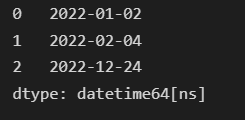

Pandas >> Data Type Conversions
Table of Contents
In this article, we will talk about how to convert between various data types in Pandas.

Data types
Let’s see the data types in Pandas and Python first.
| Pandas dtype | Python type | Usage |
|---|---|---|
| object | str or mixed | Text or mixed numeric and non-numeric values |
| int64 | int | Integer numbers |
| float64 | float | Floating point numbers |
| bool | bool | True/False values |
| datetime64 | datetime.datetime | Date and time values |
| timedelta[ns] | datetime.timedelta | Differences between two datetimes |
| category | N/A | Finite list of text values |
Sometimes, we need to convert the data from one type to another.
For example, common conversions are as follows.
- string <-> datetime
- string <-> int/float
astype()
Cast a pandas object to a specified dtype dtype.
https://pandas.pydata.org/docs/reference/api/pandas.DataFrame.astype.html#pandas.DataFrame.astype
We can use the astype() method of DataFrame or Series to convert the data types of all columns (maybe fail) or specified columns.
Convert the data types of all the columns at once
import pandas as pd
df = pd.DataFrame({"col1": ["1","2","3"], "col2": ["4", "5", "6"]})
df
df.dtypes
df.astype(int).dtypes
Convert multiple columns with data type specified for each one
We can specify a dictionary parameter to specify the data type for each column to be converted.
import numpy as np
df.astype({"col1": int, "col2": float}).dtypes
Convert the data type of one column
We can use the astype() method of Series to convert the data type of one column.
df["col1"] = df["col1"].astype(int)
df.dtypes
Error handling in conversion
When some values can’t be converted, an error will occur by default.
df = pd.DataFrame({"col1": ["1","2","3"], "col2": ["abc", "5", "6"]})
df
df.astype(int).dtypes
If we want to ignore the errors, we can specify the errors parameter to ‘ignore’.
df.astype(int, errors="ignore").dtypes
The conversion will be abandoned and data types remain unchanged.
If we specify the data type for each column separately, the columns without errors will be converted successfully.
df.astype({"col1": int, "col2": int}, errors="ignore").dtypes
Pandas functions
There are some built-in functions in Pandas to perform the data type conversions.
pandas.to_numeric()
This function can convert a scalar value, a list, or a Series to a numeric type like float64 or int64 depending on the data.
We can also specify the target type by downcast parameter.
df = pd.DataFrame({"col1": ["1234", "889", "12567"]})
pd.to_numeric(df["col1"])
If invalid values exist in the column, errors will occur by default as same as astype().
Of course, we can skip the errors by specifying errors=‘ignore’.
We can also convert the invalid values to NaN by specifying errors=‘coerce’.
df = pd.DataFrame({"col1": ["abc", "889", "12567"]})
pd.to_numeric(df["col1"], errors='coerce')
pandas.to_datetime()
We can use the to_datetime() method of pandas to convert the columns with date-like strings to Timestamp type (date and time type in Pandas).
df = pd.DataFrame({"col1": ["123", "889", "456"], "col2": ["2022-1-1", "2022/2/1", "12/31/2022"]})
pd.to_datetime(df["col2"])
For more about the date and time type data processing, you can reference the article below.
Pandas » How to process Date and Time type data in Pandas using Timestamp
https://thats-it-code.com/pandas/pandas__timestamp/
pandas.to_timedelta()
df = pd.DataFrame({"col1": ["2022-1-1", "2022/2/1", "12/31/2022"], "col2": ["1 days", "3 days", "-1 W"]})
pd.to_timedelta(df["col2"])
We can use the converted result to do some date-related operations.
For example, we add the col2 (time difference) to col1.
pd.to_datetime(df["col1"]) + pd.to_timedelta(df["col2"])

pandas.DataFrame.convert_dtypes()
Convert columns to the best possible dtypes.
https://pandas.pydata.org/docs/reference/api/pandas.DataFrame.convert_dtypes.html#pandas.DataFrame.convert_dtypes
For example, we defined the types of all the columns when creating the DataFrame.
df = pd.DataFrame(
{
"a": pd.Series([1, 2, 3], dtype=np.dtype("int32")),
"b": pd.Series(["x", "y", "z"], dtype=np.dtype("O")),
"c": pd.Series([True, False, np.nan], dtype=np.dtype("O")),
"d": pd.Series(["h", "i", np.nan], dtype=np.dtype("O")),
"e": pd.Series([10, np.nan, 20], dtype=np.dtype("float")),
"f": pd.Series([np.nan, 100.5, 200], dtype=np.dtype("float")),
}
)
df.dtypes
We can use the convert_dtypes() method to convert columns to best possible dtypes.
df.convert_dtypes().dtypes
Convert columns type when reading data from file
We can convert the types of columns when reading data from files.
For example, when reading a CSV file we can convert column types as follows.
If we want to read all the columns as strings.
df = pd.read_csv("data/student_scores.csv", header=0, dtype=str)
df
df.dtypes
As you can see, all the column types are objects.
We can specify the target type for each column to be converted by dtype parameter.
df = pd.read_csv("data/student_scores.csv", header=0, dtype={"Subject": "category", "score": int})
df.dtypes
As you can see, the Subject column and the score column are converted to category and integer type.
You can also convert the date-like strings to date-time type data using parse_dates parameters.
df = pd.read_csv("data/student_scores.csv", header=0, parse_dates=["birth"])
print(df["birth"].iloc[0])
print(type(df["birth"].iloc[0]))
2000-01-01 00:00:00
<class 'pandas._libs.tslibs.timestamps.Timestamp'>
Download the CSV file below
Custom functions
Sometimes, the columns with special formats cannot be converted by the built-in functions.
For example, suppose we have a DataFrame below.
The strings are numbers separated by commas.
df = pd.DataFrame({
"amount": ["1,234", "567", "29,112,323"]
})
df
Error occured whether using astype() or pd.to_numeric() to convert the types.
df["amount"].astype(int)
pd.to_numeric(df["amount"])
In this case, we can use the custom functions to perform the type conversion.
Let’s use the apply() method of DataFrame to convert the amount column.
Custom function definition
def conv_amount_to_num(row):
"""
Convert the amount column separated by commas to integers.
:param row: a row of DataFrame
:return: converted integer
"""
if not pd.isnull(row["amount"]) and row["amount"]:
str_without_comma = str(row["amount"]).replace(",","")
return int(str_without_comma)
else:
# return 0 if null or empty
return 0
Apply the conversion defined in the conv_amount_to_num function.
axis stands along which direction the function is applied.
0: apply function to each column.
1: apply function to each row.
Here we want to convert the amount column of every row, so we need set the axis to 1.
df.apply(conv_amount_to_num, axis=1)
As you can see, all the values in the amount column are converted to integers.
You can use the result to override the original column or create a new column.
df["amount"] = df.apply(conv_amount_to_num, axis=1)
# OR
df["amount_new"] = df.apply(conv_amount_to_num, axis=1)
For learning more about apply(), you can reference the article below.
How to Use Map() Apply() ApplyMap() Methods in Pandas
https://thats-it-code.com/pandas/how-to-use-map-applymap-apply-methods/
Conclusion
We need to convert the types of columns to finish our data processing.
In this article, we talked about the conversion ways below.
- astype() method of DataFrame or Series
- Pandas built-in functions (to_numeric(), to_datetime(), to_timedelta(), convert_dtypes())
- define custom functions to convert the columns that can’t be converted simply by the above ways